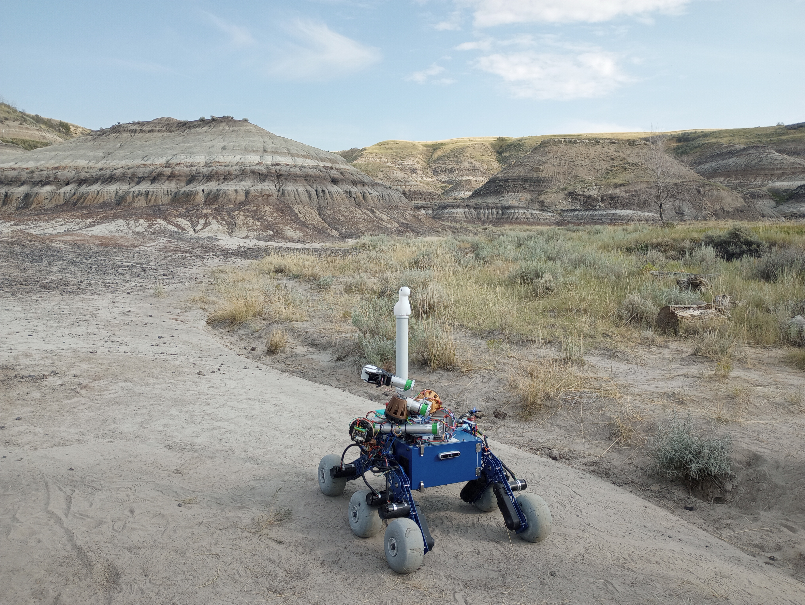

CRATER
Caltech Rover Autonomy, Technology, and Exploration Research is building a rugged autonomous rover for mission tasks in terrain, manipulation, and remote search-and-rescue.

Caltech Rover Autonomy, Technology, and Exploration Research is building a rugged autonomous rover for mission tasks in terrain, manipulation, and remote search-and-rescue.

A robot that detects tangram pieces from an image, maps them into the real workspace, and assembles the target configuration with a pick-and-place workflow.

A grid-based wavefront coverage algorithm for snow shoveling that plans a complete path from a start position to a goal while respecting obstacle and turning constraints.

A 6-DOF robotic arm that tracks a launched tennis ball and computes a contact point and paddle orientation to return the ball toward a target goal.

A VR-based eye-tracking interface using gaze intent recognition to guide a robot toward a target and support more intuitive teleoperation.